NT;RE HUD consistency, measuring pass and ammo rail
HUD Glyphs and Ammo Rail
Captured on Linux on 2026-11-09 at 1920 by 1080. The starting point is the HUD proposed in the HUD consistency pull requests, #28 to #32 on sunmachine/ntre-dev, and its captures are the ones marked original below. Three additions sit on top of it: a debug view that measures HUD text, a fix for the cut fire mode icons, and a new layout for the ammo rail and the mag count. None of the three is in a pull request yet.
Part 1. How it is measured
The debug view
cl_neo_hud_debug_draw 1 outlines every text run and every box the HUD draws. At 2 it also underlines each character's ink. cl_neo_hud_debug_dump label writes the same rectangles of one frame to hud_debug_label.txt in the game folder. Both are off by default and neither is a cheat.
- Font's line box
- Its top edge, where glyphs are cut
- Baseline
- Ink edges the text was placed by
- A box or a column
- One character's ink, at level 2


The dump
One line per box, text run and character, tab separated, in screen pixels. These are the ammo panel's first lines with the MILSO in hand, after the icon fix.
# screen 1920 1080 frame 208837 # kind element name scheme_font font_family tall ascent x0 y0 x1 y1 baseline ink_left ink_right text box NHudWeapon box - - 0 0 1464 996 1920 1074 0 0 0 box NHudWeapon icon column - - 0 0 1477 996 1526 1074 0 0 0 text NHudWeapon - NHudFireMode NOCR Icons 60 58 1477 1005 1526 1065 1063 1479 1524 h
The report
hud_debug_report.py reads a dump and the capture of the same frame. It finds the ink inside each character's columns, compares it with the font's outline, and flags a cut, ink outside its box, or ink away from where it was placed. This is its whole output for the MILSO's ammo panel before the icon fix.
17 text runs, 1 flagged, 1 boxes
== NHudWeapon
NHudFireMode (NOCR 63 px) "h"
line box x 1477..1526 y 1011..1074, baseline 1063; ink x 1479..1523 y 1011..1062
in box [1464, 996, 1920, 1074]: left 15, top 15, right 396, bottom 11 px to its edges
FLAGS CUT_TOP
- 'h' outline reaches 4.9 px above its line box, and the capture's ink stops flat on that edgeAfter the icon fix every scene reports no cut. Two kill feed runs per scene are still flagged: the assist separator is drawn as a plus sign with a space on each side, and the view counts the spaces as ink it was placed by. That is the tool's error, not the feed's.
How the engine sizes a font
The working assumption was that the engine sizes a font so its win ascent plus win descent fills the requested height. The first attempt at the fire mode icon fix in part 2 was built on that and came out about 6% too large in game. So five copies of NOCR were made, each changing one thing, and drawn in one launch. The engine's own numbers for each are below.
| Font | What changed | Scheme font, height | Ascent the engine reports | Glyph advance | Reading |
|---|---|---|---|---|---|
| NOCR | Nothing. Win 1757 and 362, lowest glyph at -362. | 63 / 55 / 22 / 72 / 78 px | 52 / 46 / 18 / 60 / 65 | j 49, c 10, c 4, a 14, g 31 | The reference. |
| Copy A | Win ascent 1950, win descent 169. | 63 px | 53 | j 45 | The glyph shrank. The box is 1950 plus 362: the new ascent, and the old lowest glyph rather than the new win descent. |
| Copy B | hhea ascent and descent only. | 55 px | 46 | c 10 | No change. The hhea table is not read. |
| Copy C | Typo ascent and descent only. | 22 px | 18 | c 4 | No change. The typo metrics are not read. |
| Copy D | Only the icon glyphs kept, so the lowest glyph is at -53. No metric changed. | 72 px | 70 | a 16 | The glyph grew. The box is 1757 plus 53. |
| Copy E | Icon glyphs only, and win ascent 1950. | 78 px | 76 | g 33 | The box is 1950 plus 53. |
The rule on Linux: a font's line box runs from its OS/2 win ascent down to its lowest glyph. The font is sized so that box fills the requested height, and nothing is drawn above the box. For every font the HUD loads today the lowest glyph sits on the win descent, so that assumption gave the right sizes. It fails only for a font whose glyphs stop short of the win descent, which is what a font made of icons is. Windows is untested.
The icon fix in part 2 follows the rule. NOCR Icons has win ascent 1950 and win descent 53, a line box of 2003 units where NOCR's is 2119, and the scheme font's tall drops from 28 to 27 to make up the difference.
Part 2. What changed
Fire mode icons
The automatic, semi-automatic and pump icons lost 3, 4 and 1 rows from their top at 1080p. The engine draws nothing above a font's line box, and NOCR's line box stops below these three glyphs. A font file holding NOCR's icon glyphs with a taller line box removes the cut and keeps each icon's width to the pixel.
The measuring capture with the world blacked out, enlarged five times, with the dumped rectangles drawn on it. Red is the top of the font's line box, where the engine stops drawing. Before, the round sits flat against it. After, the line box starts above the glyph.


| Icon | Glyph | Outline top, font units | Line box, before | Ink rows, before | Line box, after | Ink rows, after | Ink columns |
|---|---|---|---|---|---|---|---|
| Semi-automatic | h | 1916 | y 1011..1074 | 1011..1062, 52 rows | y 1005..1065 | 1007..1062, 56 rows | 1479..1523 both |
| Automatic | j | 1864 | y 1011..1074 | 1011..1060, 50 rows | y 1005..1065 | 1008..1060, 53 rows | 1479..1523 both |
| Pump | l | 1805 | y 1011..1074 | 1011..1062, 52 rows | y 1005..1065 | 1010..1062, 53 rows | 1480..1522 both |
NOCR's win ascent is 1757 units. The panel runs from y 996 to 1074, so the whole semi-automatic icon stands 11 px from its top and 11 px from its bottom.
The same icon as text
The script prints any glyph's pixels as characters, so a cut can be read without opening an image. Left is before, right is after.
NHudFireMode 'h': line box y 1011..1074 1007 ::::::::::::::::::::::::::::::::::::::::::::::::::: 1008 ::::::::::::::::::::::::::::::::::::::::::::::::::: 1009 ::::::::::::::::::::::::::::::::::::::::::::::::::: 1010 ::::::::::::::::::::::::::::::::::::::::::::::::::: 1011 top ::::=############################+*###########*-::: 1012 ::::=############################+*############+::: 1013 ::::=############################+*############*::: 1014 ::::=############################+*############*::: 1015 ::::=############################+*############+::: 1016 ::::=############################+*###########*-::: 1017 ::::=############################+*##########*-:::: 1018 ::::=############################+*########*+-::::: 1019 ::::=############################+*#####*+=-::::::: 1020 ::::=#+-*####################*-:::::::::::::::::::: 1021 ::::-+-:=++++++++++++++++++++-::::::::::::::::::::: 1022 ::::::::::::::::::::::::::::::::::::::::::::::::::: 1023 ::::::::::::::::::::::::::::::::::::::::::::::::::: 1024 ::::::::::::::::::::::::::::::::::::::::::::::::::: 1025 :::::::::-=++******##############****++-::::::::::: 1026 :::::::=*###############################*+-:::::::: 1027 ::::::+###################################*=::::::: 1028 :::::+#####################################*-::::::
NHudFireMode 'h': line box y 1005..1065 1003 ::::::::::::::::::::::::::::::::::::::::::::::::::: 1004 ::::::::::::::::::::::::::::::::::::::::::::::::::: 1005 top ::::::::::::::::::::::::::::::::::::::::::::::::::: 1006 ::::::::::::::::::::::::::::::::::::::::::::::::::: 1007 ::::=*=-*###################*+-:::::::::::::::::::: 1008 ::::=############################+*#####*+=-::::::: 1009 ::::=############################+*########*+-::::: 1010 ::::=############################+*##########*-:::: 1011 ::::=############################+*###########*-::: 1012 ::::=############################+*############+::: 1013 ::::=############################+*############*::: 1014 ::::=############################+*############*::: 1015 ::::=############################+*############+::: 1016 ::::=############################+*###########*-::: 1017 ::::=############################+*##########*-:::: 1018 ::::=############################+*########*+-::::: 1019 ::::=############################+*#####*+=-::::::: 1020 ::::=#+-*####################*-:::::::::::::::::::: 1021 ::::-+-:=++++++++++++++++++++-::::::::::::::::::::: 1022 ::::::::::::::::::::::::::::::::::::::::::::::::::: 1023 ::::::::::::::::::::::::::::::::::::::::::::::::::: 1024 ::::::::::::::::::::::::::::::::::::::::::::::::::: 1025 :::::::::-=++******##############****++-::::::::::: 1026 :::::::=*###############################*+-::::::::
Ammo rail and mag count
The original rail drew every round at one size. A mag with more rounds than the rail has room for was drawn with fewer rounds than it holds and filled by proportion, so the PZ252's 100 rounds and the SRM's 50 drew the same full rail. Both counts sat on the top row beside the name. The latest layout draws one round per round, gives each gun its own rows and batches, and moves the mag count to the end of the rack. All crops are the bottom right corner at twice native size.
- Two rows for the PZ252, SMAC and SRM only. Their rounds are drawn small, and the lower row empties first.
- One row for every other bulleted gun, with rounds at full size when the mag fits the rail and smaller when it does not. A smaller row stands in the middle of a full round's height.
- Rounds stand in batches. The batch size is set per gun in its weapon script, and the space between batches is 0.4 of a round's width.
- The mag count stands at the end of the rack, at the panel's right edge and level with the rail, opposite the fire mode icon. Its number and its round glyph are larger than before.
- The round count sits over the rail's right edge on the top row.
Against the originals
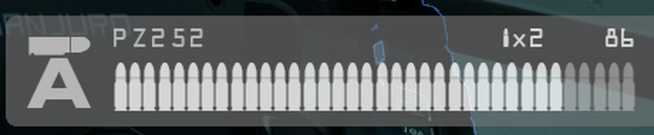
Latest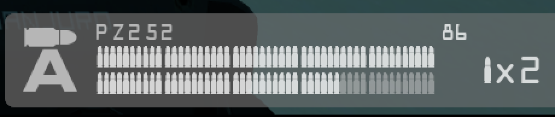
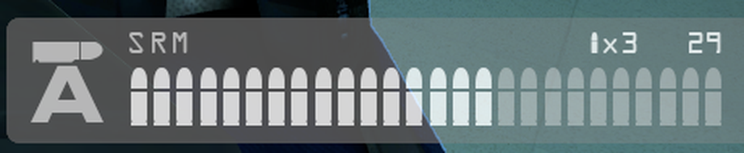
Latest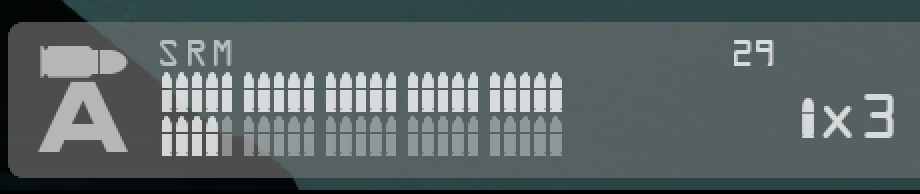
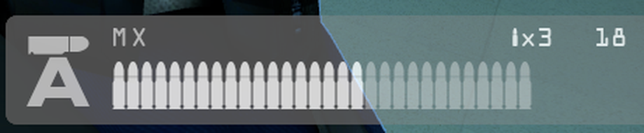
Latest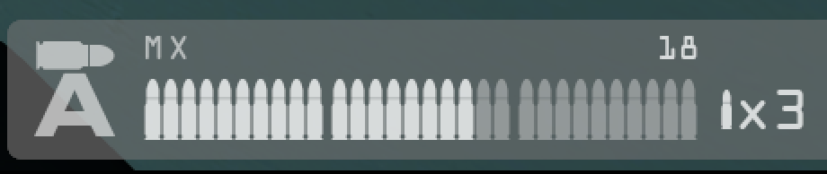
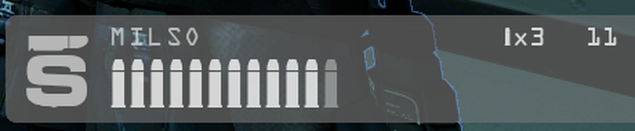
Latest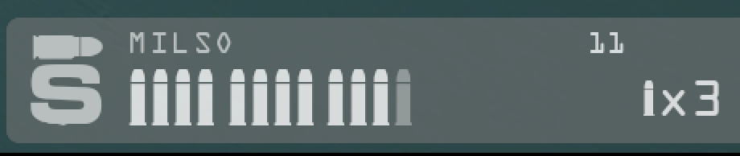
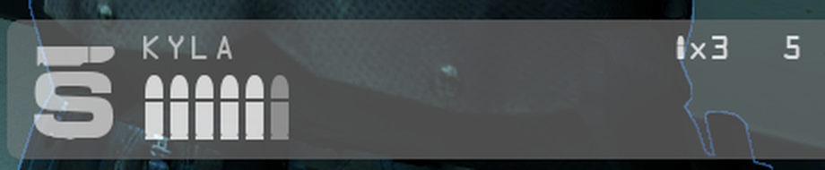
Latest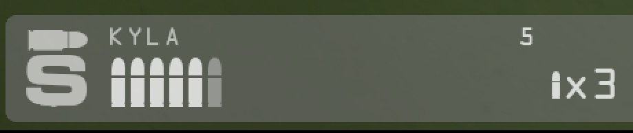
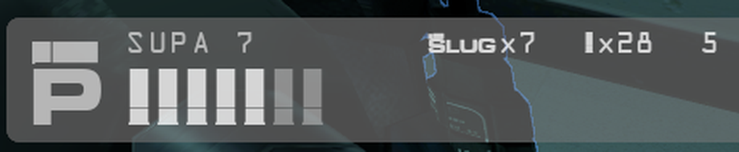
Latest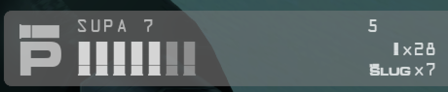
Latest only
These guns were not in the original capture set, so there is nothing to set them against.
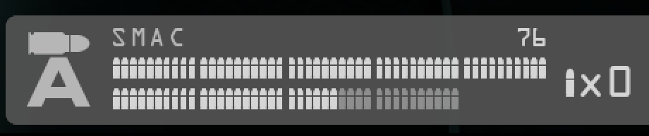
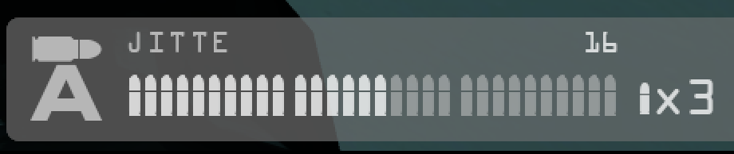
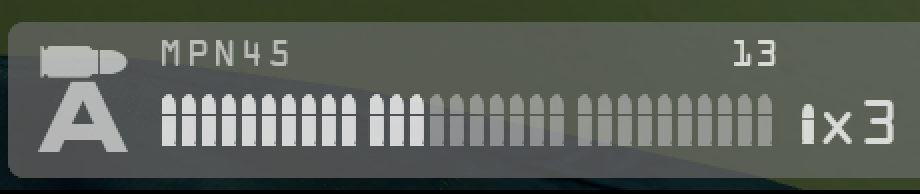
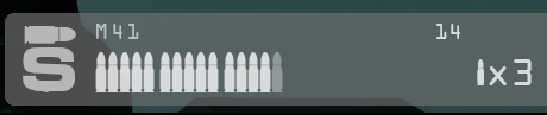
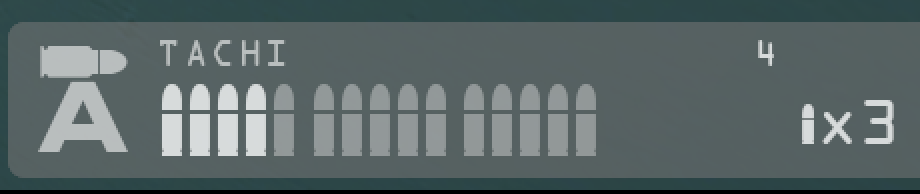
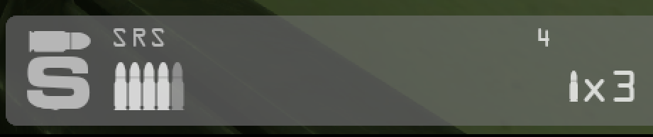
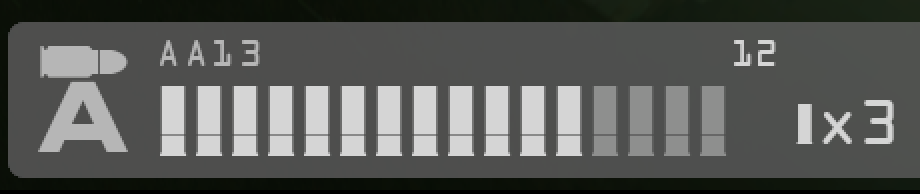
| Gun | Mag | Rows | Batch | Round size |
|---|---|---|---|---|
| PZ252 | 100 | 2 | 10 | Small |
| SMAC | 90 | 2 | 10 | Small |
| SRM, SRM-S | 50 | 2 | 5 | Small |
| MX, MX Silenced, ZR68C, ZR68S, PBK56S | 30 | 1 | 10 | Full |
| Jitte, Jitte scoped, both MPN45 | 30 | 1 | 10 | Smaller, to fit the rail |
| M41, M41S, TACHI | 15 | 1 | 5 | Full |
| MilSO | 12 | 1 | 4 | Full |
| M41L, ZR68L | 10 | 1 | 5 | Not captured |
| KYLA | 6 | 1 | None | Full |
| SRS | 5 | 1 | None | Full |
On the SUPA 7 the two count lines run from y 1029 to 1062 at 1080p, and the shells on the rail run from y 1028 to 1062. The slug glyph spells its name and is about 42 px wide, so the lower line starts further left than the upper one. Both lines end on the same right edge.
Panels this pass did not change
The vitals, compass, dash and kill feed are as the pull requests propose them. Their latest captures follow, since the measurements above were taken on them too.
Vitals
Bottom left corner. Jura labels and NOCR numbers on the bars' baselines.


Compass
Bottom center. Directions in Jura, the objective arrow above the box.


Dash
Top center. Bold clock and alive counts, even rows, avatars with cut names, squad list in Overpass Mono.


Kill feed
Top right. Names in Overpass Mono, words in Montserrat, the feed starting below the avatars only when they drew this frame.


Text and its boxes
With --layout the report gives each box's padding to the nearest ink and the rows inside it. These were measured after the icon fix and before the ammo rail change, so the two rows for the ammo panel's text are left out until it is measured again. Nothing here is flagged. The uneven pairs are listed so they can be ruled intended or not.
| Box | Size | Left | Top | Right | Bottom | Note |
|---|---|---|---|---|---|---|
| Vitals | 456 by 78 | 9 | 9 | 11 | 11 | Baselines at y 1018, 1040 and 1063. The top and left paddings are 2 px smaller than the bottom and right. |
| Ammo, icon column | 49 by 78 | 2 | 11 to 14 | 2 | 11 to 13 | Fire mode icons. Frag 12 and 13, smoke 15 and 16, knife 31 and 30. |
| Dash | 210 by 66 | 21 | 8 | 20 | 8 | Round text ends at y 16, the clock runs 24 to 39, the alive counts start at 47: 7 px between rows, as designed. |
| Kill feed row | 29 tall | 13 to 14 | 5 to 7 | 13 to 14 | 5 to 8 | Names stand on a baseline 2 px above the icons' baseline. |
| Compass | 450 by 24 | n/a | 3 and 5 | n/a | 4 and 6 | Separators, then letters. |
Deferred captures
These were on the earlier version of this page. Each shows the ammo panel as it was before the rail change, so it was taken down and waits for the next capture run.
- The ammo panel with the debug view on, for the MX, SRM and SUPA 7.
- The ammo panel for the frag grenade, smoke grenade, knife and BALC. The rail change moved the counts, and these were not captured again.
- All nineteen full scenes and their debug frames. Every one has the earlier ammo panel in its corner.
- The M41L and ZR68L. They have never been captured. The M41L could not be put in hand.
- The ammo panel's rows in the padding table, and the rest of its dump.
Still open
- The icon font: ship
nocr_icons.ttfmade from NOCR, redraw the three icons into the team's own icon font, or leave the cut. NOCR's file names no license. - The smaller rounds are drawn as scaled quads and do not report to the debug view yet, so the rail change has been checked by eye and by pixel rows, and not by the report.
- The rail change was built and captured at 1920 by 1080 on Linux only. Other resolutions and Windows are untested, and the line box rule is Linux only until the dump is run on Windows.
- The scoreboard draws through the menu toolkit in its own coordinates, so its text is dumped without a screen position.
- Whether the 9 and 11 px paddings in the bottom panels are intended.